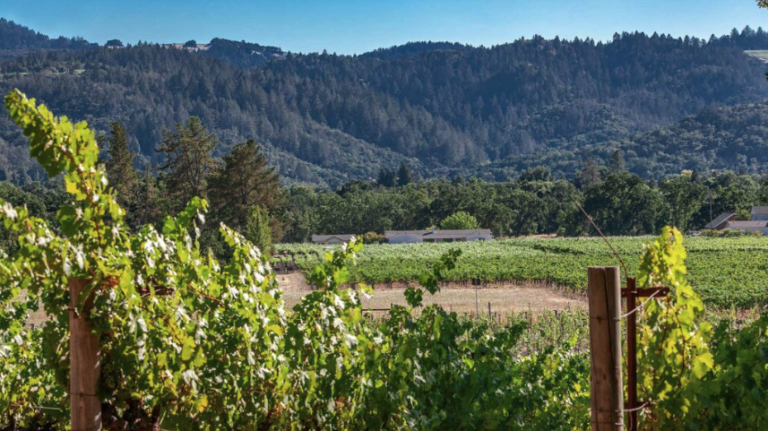
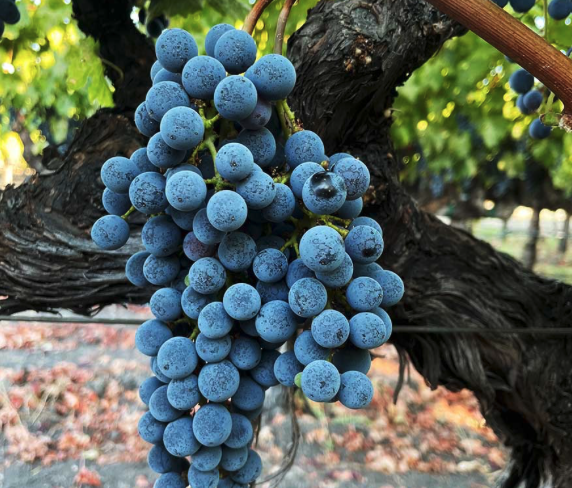

The soil's heat-retaining properties help the vines ripen efficiently while its structure retains enough moisture to endure the hot, dry season. This results in powerful, structured wines with depth, minerality, and aging potential. Each bottle of Gubel Family Cabernet Sauvignon reflects this deep connection between soil and wine—a true expression of our site's unique terroir.
The Foundation of Character
Where Great Wine Begins
At Gubel Family Vineyards, exceptional wine begins with exceptional soil. Located in the Calistoga AVA at the northern tip of Napa Valley, our estate vineyards are rooted in volcanic-alluvial soil, known for its perfect synergy with Cabernet Sauvignon. This distinct terroir, shaped by centuries of geological transformation, provides the ideal balance of stress and support to produce complex, age-worthy wines with bold character.

Volcanic Alluvial Soil
Exceptional for Cabernet Sauvignon
Volcanic alluvial soil is formed from ancient lava, ash, and other volcanic materials, rich in iron, magnesium, potassium, calcium, and phosphorus. These minerals stress the vines slightly, encouraging deeper root systems and concentrated flavors in the grapes.
The soil is also lower in organic material, which limits vine vigor, leading to smaller berries with more concentrated flavors and tannins, ideal for structured, age-worthy Cabernet Sauvignon.

Climate
Synergy with Calistoga
Calistoga is among Napa's warmest sub-regions, with generous sunshine and pronounced diurnal temperature swings. These conditions promote full phenolic ripeness while preserving grape acidity and encouraging the development of rich, dark fruit flavors such as black cherry and cassis.
Bold, Structured, and Expressive Wines
"From our dream to your table, we hope you enjoy our wine."
— Gustavo Gubel, Founder and Owner